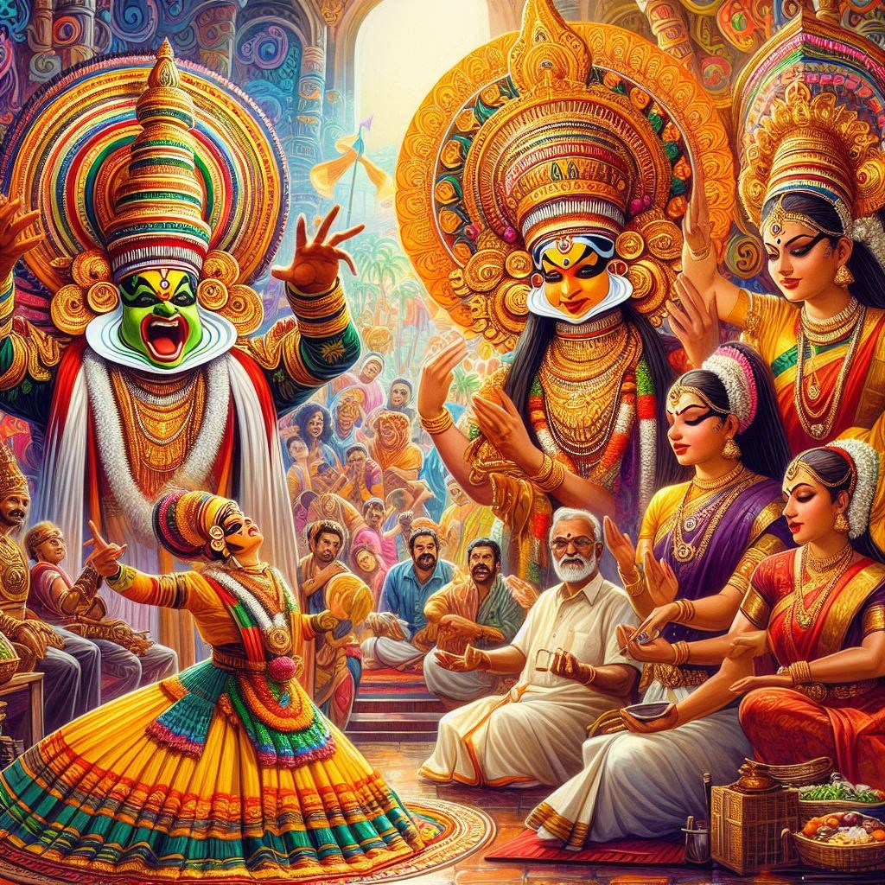
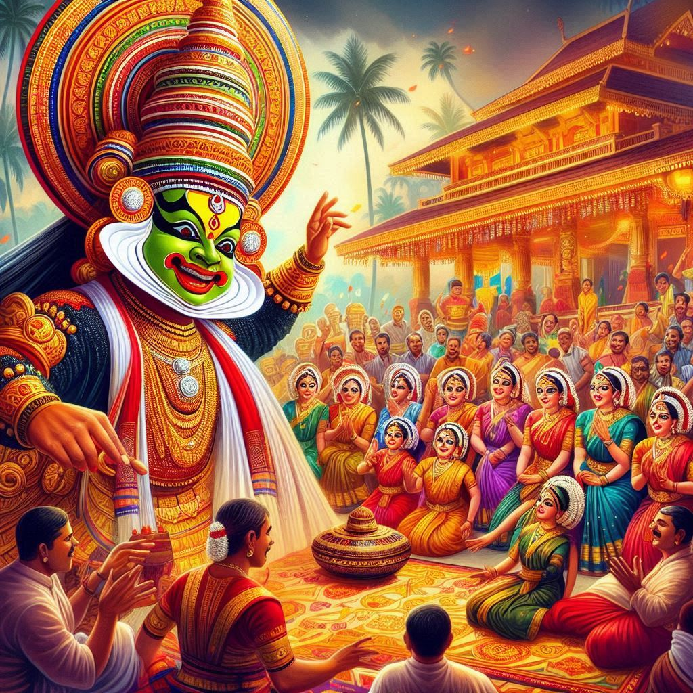

Kerala's traditions are a reflection of its unique history, geography, and cultural exchanges over centuries. They encompass a wide range of practices, art forms, customs, and celebrations that hold deep-rooted significance in the lives of the people. The traditions of Kerala beautifully blend elements from its Dravidian, Aryan, and overseas influences, making it distinctively rich and diverse.
1. Religious Traditions:
- Kerala is a melting pot of various religious communities, including Hindus, Christians, Muslims, and other smaller communities. Each religion is marked by its distinctive festivals, rituals, and traditions that are celebrated with enthusiasm and inclusivity. Temples, mosques, and churches serve as cultural hubs, where religious traditions are observed in a grand manner.
- For Hindus, temple rituals such as offering Poojas (prayers), Aarattu (holy bath of deities), and other ceremonies are significant, with traditions varying from temple to temple. Kerala's Hindu temples often host festivals with grand processions featuring caparisoned elephants and traditional music ensembles.
- Christian traditions in Kerala have a long history, with unique ceremonies and practices such as midnight masses, church feasts, and processions. The Syrian Christian community follows rituals that date back centuries.
- Muslim traditions are showcased through grand celebrations like Eid-ul-Fitr and Eid-ul-Adha, along with Muharram processions and mosque gatherings.
2. Festivals and Celebrations:
- Onam is Kerala’s most celebrated festival, marking the harvest season. It is a ten-day festival featuring grand feasts called Onasadya, Vallamkali (snake boat races), traditional games, and cultural performances. Onam reflects Kerala’s agrarian past and the legend of King Mahabali.
- Vishu, marking the Malayali New Year, is another important festival, celebrated with rituals, the "Vishukkani" arrangement, and fireworks.
- Traditional temple festivals like Thrissur Pooram, known for its colorful grandeur, showcase Kerala's vibrant temple arts and grand processions.
3. Traditional Arts and Performances:
- Kathakali, a classical dance-drama known for its elaborate costumes, makeup, and storytelling, often enacts tales from Hindu epics. Mohiniyattam, known as the dance of the enchantress, is a graceful dance form performed by women.
- Theyyam, a ritualistic art form practiced in northern Kerala, is a vivid mix of dance, mime, and music. It depicts the folklore and legends of the region.
- Kalaripayattu, one of the oldest martial art forms, is also a deeply rooted tradition that showcases Kerala's warrior heritage.
4. Traditional Medicine and Ayurveda:
- Kerala has a long tradition of Ayurveda, India's ancient holistic healing system. Ayurvedic practices are deeply ingrained in Kerala's culture, and many people still rely on natural therapies and herbal medicine for health and well-being. Ayurvedic centers and spas offer traditional treatments for tourists and locals alike.


5. Traditional Cuisine:
- Kerala’s traditional cuisine, characterized by the use of coconut, rice, and a blend of spices, is integral to its culture. Sadya, a grand vegetarian feast served on a banana leaf, is an essential part of major celebrations and religious occasions.
- Meals often feature a variety of pickles, chutneys, and curries, while seafood is a staple for the coastal population.
6. Clothing and Jewelry Traditions:
- Traditional attire in Kerala includes the "Mundu", a garment resembling a dhoti worn by men, and the "Kasavu Saree" or white-and-gold saree worn by women, especially during festivals and celebrations. The Kasavu cloth, with its elegant gold borders, is symbolic of Kerala’s textile heritage.
- Kerala also has a tradition of wearing intricately designed gold jewelry, especially during weddings and important events.
7. Customs and Social Traditions:
- Kerala places great emphasis on social norms and customs. Hospitality, known as "Atithi Devo Bhava" (Guest is God), is a deeply ingrained practice, where guests are treated with utmost respect.
- Respect for elders, community-oriented practices, and traditional ceremonies like weddings are observed with great attention to rituals and customs.
8. Nature-Based Traditions:
- Kerala’s agrarian traditions, including farming and coir-making, play a crucial role in the lives of many people. Rural communities maintain traditions connected with the seasons, such as harvest rituals and festivals.
Conclusion:
Kerala’s traditions reflect a harmonious blend of ancient practices, religious devotion, artistic excellence, and community spirit. These traditions continue to thrive in the modern era, ensuring that the cultural heritage of Kerala remains vibrant and meaningful for generations to come.